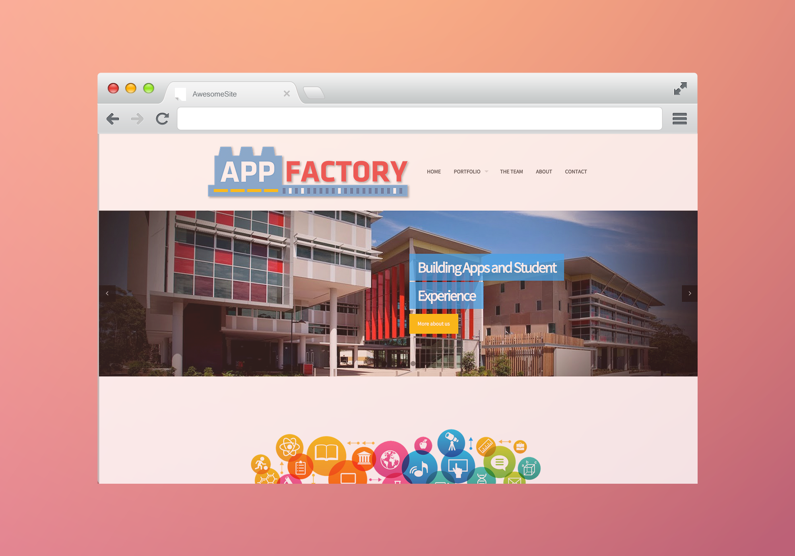

"My name is Chirag Choudhary. People often tell me that my name is like a complex puzzle, that you need to solve every time you try to pronounce it. You have to be a perfectionist to get it right, and that is me."
Web Development and creative interfaces were my gateway to the industry which led to the foundation of my own passion for the digital world. I specialise in the area of web and app development. I spend my days with my hands in many different areas of web development from back end programming (PHP) to front end engineering (HTML, CSS, and jQuery/Javascript), user experience and visual design. I am constantly learning and striving to do my very best. As far as I can remember my primary focus has been creating experiences which are new and unique to each project's subject matter. Giving each project its own identity.
Apart from that I also work with a lot of software development projects that allows me to expand my creative wings in a way different from design.
Throughout my life I have focused myself to achieve the highest possible grades in my academic studies. I graduated from Southport State High School with an OP 2 and continued to accumulate high achievements in my university studies. Currently, I am a second year Bachelor of Information Technology (Advance with Honours) student with a GPA of 7, majoring in Software Development.
My academic excellence gave me opportunity to be a proud part of Griffith Honours College and School of ICT Mentoring program, that involves supporting future IT graduates through the first year of their degree. Moreover, I am also associated with other programs such as Student Leadership committee and Griffith Robotics club, where I provided my software developing skills in projects such as the drone face recognition system and drone movement manipulation.
I am also a founding father and current managing leader of a group called App Foundation. We aspire new and current graduates to learn and apply their skills in one of the fastest emerging projects of the IT world; mobile applications.
I also take a great interest in the prospect of giving back to community, hence,I have done a plethora of volunteer work, some of which includes, Clean Surfers initiative, Surfers bird control project, Schoolies helper, Pacific Pines fire awareness program and Griffith Open Day 2014. Being part of such endeavours allowed me to learn and experience things no money could have ever allowed me to.
Overall, I am an enthusiastic, natural born leader and a great team player who stands out from the crowd by showing initiative in his work. Being perfectionist and paying attention to detail is my niche. Expanding the capabilities of my brain by higher level thinking is my way of living life. My mother once said, “You can never learn enough," I tend to agree 100%.
I am currently based in Gold Coast, Australia. Nevertheless, I am flexible in working with partners around the globe. After all, confining creativity in one place is a crime in its self.
If you want to collaborate on crafting amazing experience for people or for any other enquires – you are very welcome to contact me.
My professional philosophy is to work my hardest to achieve the upmost level of success and satisfaction with each project at my helm. I plan to do so by my pouring my heart and soul in my passion of digital development industry and by performing with highest standards at all times. Keeping commitment, dedication, and loyalty in the forefront of my mind and my actions.
I talk a lot about professionalism, and that is because being punctual and proficient is a trait of successful leader. It is my belief that one must always try to surround himself in a professional environment so he can effectively project confidence to the others around him. In grand scheme of things I trust in the power of education and the personal and moral obligations that drive from it.
I hope to one day see myself undertake a PHP degree to research and contribute to the advancement of this emerging digital era. But, before I take this initiative I want to equip myself with some hand-on experience so I have a higher understating of my work.I have a long list of objectives I would like to fulfil by always remaining engaged in my professional. I always keep myself open for new and exiting endeavours.
I strongly believe in the premise of upholding of creativity as on of the most important trait of human nature. Employing creative means to create pristine and intuitive developments and using that creativeness to expand the capabilities of human brain is the sole purpose of our lives. Without original ideas we as humans will always remain stuck in the vortex of rehashed ideas and repeated mistakes.
Website built from ground up for the marketing of Gorilla Watch

One of my earliest "complete" websites I made from the scratch as a part of Web designing course. The Task was to create promotional/informative website for a fictional item. For that purpose I choose smart watch as my selling product and I named it Gorilla Watch. I mainly utlised HTML and CSS, with a bit of javascript to flush out some of the UX elements. Plus, I also designed the UI and graphics for the whole project.
Taking inspiration from the gorilla glass. The project was a great success, not only it allowed to recieve high grades, but it also helped in my personal development.After the complettion of task, I was able to see my mistakes and it was clear to where I could have achieved even better results. Nonetheless, it became the foundation for my passion for web development. One day I hope to revisite the idea and create a more professional and well rounded website to further document my developments.
App made for the food junkies at Griffith University
Food@Griffith is an authentic app especially for the lovers/critique of different food venues located at Griffith. The app was developed as a part of my Interactive app development course, which focused on the concept of developing the app once for all platforms at the same time. To do so, Titanium appcelerator was used. It allowed the users the ability to search through different food venues and read or write their review about the place.
Javascript was the main language used to develop in the Titanium IDE. Model-View-Controller was used as a part of the development cycle to emulate a experience of creating a genuine application. Local database was employed to perform the CRUD functionality in the review section. All the User Interface, User Experience and graphics were also handled by me.
A Wordpress based website for Griffith's official app developers
This particular website was made using Wordpess as it was requested by the Clients. They required a portfolio like website for their company who operates as a part of Griffith University. They are professional app development who already have a big presence in the app markets. A website was required in order to showcase their previous work and provide information regarding their development process, team and their contact information.
The project was handled by a team of three people. I concentrated on the on the design and UI, along with editing of the content.
Making this website allowed my to experience a real-life clients involvement and hardships that came along it. I learned a lot about the importance of proper communication between the clients and how essential it is to do the analysis before commencing the task. Furthermore, working in a team defiantly gave me a better understanding of team work.
A puzzle game developed entirely using Java programming language
The Number game, is a game developed using Java programming language. It is digital version of not very famous game called cross-Number that is mishmash of Sudoku and arithmetics. The users must identify and calculate the numbers with given arithmetic operations to match them with the given result.
The game involves complex algorithms to calculate all possible solutions for a given stack of numbers. The difficulty is significantly ramped by the inclusion of bitwise operators and the choice for players to play with different base systems, including binary. It is developed with the concept of object-oriented programming, making all the modules to work without interrupting the inner workings of the other.
Programming a drone to detect and follow a human face
I was a part of Griffith's Robotics group where we focused on manipulating a drone to detect and follow a human face using C++ programming language. The project was one of the main featured showcase on the Griffith's open day 2014.
A cape design for a world-famous game serious, God of War
As a part of game promotion, I took part in this online art exhibition which showcased most popular cape designs. I designed the cape using only Photoshop in the period of three days. It is based on the Greece mythology. In particular I took inspiration from the "minotaurs", and incorporated the essence of metal in it. The design was also featured on the Playstation's official blog and God of War's website.
In this workshop we understand the importance of ePortfolios and how to go about creating one

Ever since I have been a developer and a designer, I have regarded UI as one of the key things that either makes or breaks the projects. It is crucial that that proper UI paradigms are followed and closely monitored to suit the needs of every individual project. If a user can’t use a project, it is useless. Hence, I enrolled in this course to fill my void of deeper understanding about the UI, so that I can confidently work with my clients and employees with any project which aims to serve the end user. Creating mesmerising UI designs is my end goal which I will chase for the rest of my career.
EPortfolio will not only help me show my skills and passion to my clients and employees, but also it will give me a chance to look back at my work, and hopefully critic my work so I can effectively learn from my mistakes and understand what I did wrong and why did I do it that way. It is an excellent platform for self-improvement. Considering my career field of development and design it is simply a requirement for to have an ePortfolio, because it is now a general requirement in the industry, no one is expected to showcase their work on a piece of paper.
As I said, it has to be a perfect medium to showcase my skills. In high level viewing, my ePortfolio should be reflection of me and my work, of my beliefs, and my philosophy of life. It may change in future but for now, it has to be simple, singular UI so there is no going back and forth between pages to search for right information. Everything should be under a same page. Detailed information should be hidden, and only visible when user actively choses to see it.
About me, My philosophy, Portfolio, Workshop work, Timesheet, Blog [in future], Contact information.
As I mentioned, everything will be on a singular page so that the user does not need to navigate between different pages and potentially lose focus. Furthermore, it will be structured in a manner when similar things are grouped together, like about me and philosophy, workshop work and timesheet, and contact information and the footer.
It should be a reflection of me. Hence, showing that I am a hard worker who has a real passion for the development and design industry. It should showcase my leadership skills through all the things I have done and projects I have helmed. It should showcase my development as a developer and designer. It should say that I am the right guy to believe in.

Currently I do not have enough skills that would cover the expectations of my chosen dream job, but I,m confident that with hard work, I will gain all the skills in a period of 1 year. Additionally I will invest a great deal of time in producing actual projects to showcase them on my ePortfolio, so that it can gain the attention of my potential employers.
Looking back at my work through this ePortfolio, I was able to observe my work and understand how I have progressed over the years. I recognised the mistakes I made during the development of various projects. How I disregarded the simple UI paradigms which negatively influenced the overall quality of my work. Nevertheless, curating my ePortfolio was the absolute best thing I could have done with my time. The importance of ePortfolio, especially in my industry is unmeasurable. I plan to make this a part of my life, I will unquestionably update it with my latest work every time I finish a project. My ePortfolio has and certainly will play a major part in my personal and professional development, by not only allowing to reflect on my work, but also by showing me what my work, and my own words say about me and my personality. It was definitely an important milestone of my professional development. I am now one step closer to my goals and my aspirations.
In this workshop we user research tools to learn more about the AEC officials

Officer In Charge (OIC)
OICs are responsible for the management and the conduct of polling at the polling place. Responsibilities include the inspection and setting up of the polling place, receipt and checking of all election materials, supervising polling staff in their duties, conducting the count, packaging and returning materials to the Divisional Office.
Second In Charge (2IC)
2ICs are employed mainly in larger polling places to assist the OIC with polling and counting duties. They may provide relief for other polling staff as required.
Polling Place Liaison Officer (PPLO)
PPLOs are selected to act as 'agents' for the Divisional Returning Officer (DRO) on polling day. Acting with the authority of the DRO, PPLOs visit a group of polling places to observe and advise on proceedings.
Declaration Vote Issuing Officer (DVIO)
Declaration Vote Issuing Officers process Declaration Vote Envelopes, issue votes to absent and provisional electors, complete relevant returns, package/label materials at close of poll and assist with the count of ballot papers after the close of poll.
Inquiry Officer (IO)
Inquiry Officers attend to the needs of electors waiting in the queue, assist electors who require help in casting a vote and assist with the count of ballot papers after the close of poll.
Ordinary Vote Issuing Officer (OVI)
Ordinary Vote Issuing Officers issue ordinary ballot papers to electors whose names are found on the Certified List of Voters, mark the Certified List, complete the account of ballot papers and assist with the count of ballot papers after the close of poll.
Ballot Box Guard (BBG)
Ballot Box Guards supervise ballot boxes to ensure that voters place ballot papers in the correct ballot box, direct voters to the exit and assist with the count of ballot papers after the close of poll.
Queue Controller (QC)
Queue Controllers organise electors into a single queue, direct electors to Issuing Points, ensure Absent electors are directed to Declaration Issuing Points, identify electors who require assistance and assist with the count of ballot papers after close of poll.
Scrutiny Assistant (SA)
Scrutiny Assistants are employed from 5.30pm to assist with the dismantling of voting screens, unfolding of ballot papers, packaging of material and tidying the polling place.
Electoral Visitors (EV)
Electoral Visitors conduct mobile polling at identified institutions such as hospitals, convalescent homes and aged care facilities in the week prior to polling day in accordance with a published itinerary. This type of polling does require the Polling Official to carry election material to and from their transport to the place where polling will occur. The Polling Official may also need to walk around (moving from bed to bed) and will need to carry the voting materials with them.
Pre-poll Voting Officers (PVO)
Pre-poll Voting Officers issue votes from Pre-poll Voting Centres (PPVCs). These are generally located in holiday areas, transport terminals, shopping centres and areas remote from a Divisional Office. They provide a service to electors who are unable to vote on polling day or are from interstate. The Officer-in-Charge of the PPVC is responsible for the supervision of staff, daily reconciliation, final balancing, packaging and returning all materials to the Divisional Office.
Remote Mobile Polling (RMP)
In some States (NT, QLD, WA, SA), limited numbers of polling officials are engaged to conduct mobile polling in remote areas, frequently Aboriginal Communities. Persons expressing interest in this type of polling must be able to demonstrate cross cultural awareness and sensitivity and confirm their ability and willingness to travel in light aircraft, 4WD vehicles or boats. Remote polling does require the Polling Official to carry election material to and from their transport to the place where polling will occur.
AEC Officials are predominantly, hopefully, unbiased citizens with a general interest in politics. They also should have a keen sense of dexterity as they are essentially dealing with very repetitive tasks for the foreseeable day.
The people they need to deal with all almost all forms of society. They should be able to hold their tongue and deal with stress and anger in a calm fashion while maintaining poise when dealing with either irritating or difficult voters.
They should also have adequate math abilities as the voting process requires them to be sharp with concise memory.
We as a team had to do a open sort. The cards were sorted according to each AEC official's roles and tasks given to them. Additionally, they were arranged in a according to the occurrence of tasks.
“Official selects polling station” and “Identify polling station” were the two cards which were left out, as they did not fit any of the categories. Official in charge should only command a singular polling station at a time, allowing to oversee multiple polling station would negatively effect the integrity AEC. "Idenifying the polling station" will be done in advance to the actual voting day.
A new card "Open polling station", was created to illustrate the beginning of the whole process.

Even though, I had previous exposer to the aspect of researching the target audiences, this course provided me with a deeper understanding of how and why it is ultra-critical to properly do the target research as a part of analysis before moving forward with the development. In particular I appreciated all the research tools which were described in detail through various examples.
The activity done in this workshop allowed me to understand how to approach user research from a completely different view point. Using card sort to evaluate such a targeted group of people for all sort of information about their characteristic was an effective technique. I have already started to use these techniques in my other courses, web programming to be specific. I can already see the advantages I have with these skills.
Being the very first team based workshop, I further bonded with my group. Interacting with them in this short time helped me realise how differently each of us worked, and even after a lot of back and forth, we were happy to come to common ground and finalise our decisions. It described me a general process a team goes through while working together.
In this workshop we practice our design principles by employing them in a travel planner

Our travel planner is made to cater the needs of very focused group of people who value having a great experience even if that is priced higher than normal. Thus, our target audience will typically be Business class Travelers, Aged 30+ with annual income of $100,000+. Also, it is expected that they have university level education in most cases.
Travel planner is there to serve them as a journey planner that will allow them to identify town or suburb they wish to travel to. The planner will then present the users the information regarding their chosen destination.
Our travel planner is web-based application which adapts to the characteristics of various devices, including laptops, desktops, tablets and mobile. Since the app relies on the internet to pull all the information, it is apparent to have a web-based application. More importantly, it will allow the users to access it from anywhere.
Since the app is made to be used on high resolution digital screens, it is quite clear that san-serifs is the best approach for displaying any sort of text.
We chose to utilise cool neutral colors with predominant use of sky blue. Along with increasing the readability, neutral colors also project authority and security, which is an essential part of our product. The sky blue color represents sky, which apart from being our subject matter, also invokes peacefulness and calmness.
The planner will largely focus on the creative use of colors with minimal imagery. Some images reflecting the partnership with major airline company will be used to increase the legitimacy of the website. Some images illustrating "high-standard" experience may also be used to complement he design and the layout. All the images will be of very high quality because of our target audience expectations.
Minimal to no sound will be used. As it may distract the user from their main motif of accessing the information.
The layout will focus on making the web app adaptable and responsive to the users chosen device. It is important to have a style which will cater to the paradigms of all different devices. Furthermore, it will heavily use known design conventions to generate familiarity.
Having a brief background in design industry, I was able to contribute my expertise for this activity. Major pondering things for me was how other members of my team reacted to the process of transmuting a concept from thoughts to an actual thing. Interestingly what we as a team realised was that, even though we all agreed to the design principles on paper, we all had different vision of how it would translate in real life. These basics design principles should be the foundation of any user interface design that seeks to truly leave a mark on the world. While doing the stage two of design brief, I will make sure that my whole team fully adheres to these principles. Overall, the fact that I was already aware of these basic design principle did not stop me from learning by practicing more, especially as a part of a team where I was not the only decision maker.
This week we build on the travel planner from last week and apply high level design principles

After much discussion as a team, we decided to re-design the interface of the travel planner from the last week to better accommodate the conventions and other "Big Picture elements"
This was a big topic of discussion for us. We re-did the whole design based on this thinking. We made many layout changes, button changes, icon changes and a lot more to make it more understandable and intuitive. We placed the login section on the top right, as it is on most websites. Logo was placed on the top left to make it more traditional. Furthermore, we included text in the buttons as icons are not always enough to identify functions. We under-layered the map as well, as it was not an essential part of the main functionality. Overall, these changes allowed us to simplify our design while at the same time increasing the usability dramatically.
A home page was created to accommodate the main functionality of the app, which is finding flights from different locations. Thus, following the three grid rule, the input from users becomes the center of their attraction.
As mentioned, we attempted to employ as plethora of conventions that suited our design and functional needs. Hamburger button, Login box, the three grid system, familiar symbols, positioning of logo and buttons with icons and text are some of the main conventions we used in our travel planner. The general layout of the website is also more conventional to what a pre-established travel planner would look like. Further improvements can be made in the midst of prototyping stage, as it is necessary to observe these conventions in a more realised form.
We designed the layout in such a way that all the prominent details were grouped together on the left side of the window, while results being presented right in the center (Focus point). Elements like login box which are only used occasionally were placed in the right, so the user does not have to always move their cone of vision.
Travel planner will work fluently on the touch screen as it was created as a web-based app which will adapt to the characteristics of different devices. Proper implementation is absolutely essential from the development perspective for it to fully succeed.
It is hard to say whether we completely nailed the view of more universal audience or not, but we always tried to have an open mind. We had thorough discussions involving our target audience before making any decisions that potentially catered the product more to us than them. It is fair to say that after making the revision to our first prototype, it now suits universal view more so than before.
In its current state, the travel planner is relatively headed in the right directions. However, it is not perfect. To further improve upon the user interface we need to first have a more physical form of the product. Prototyping the planner with proper tools will allow us to perhaps observe it from another point of view, and even realise mistakes that still resides in our design.
This workshop in particular was very thought provoking for me, as it makes as challenge our own beliefs and vision. The idea of “Big Picture” design is perhaps the most talked about element of any user interface in the world. Whether it's a new product from Apple, or a new car from Holden, the “Big Picture” is all that matters. After learning and applying the whole process point by point I can now identify these elements in the things around me and appreciate the effort that goes into them. Having to identify the conventions in the medium, has expanded my comprehension of why certain things are always in the same manner. Furthermore, I learned that It is important understand the behavior of a typical user who skim read information and focuses on the content in the middle of the page. Though it is extremely challenging, it is also very rewarding. By having long discussions with my team I was able to set aside my biased vision and see the product through the eyes of the user. Activities like these makes me realise the true importance of working in a team as supposed to make decisions alone.
Stage 1 contains documentation regarding the analysis of the project Fiscal
 User Interface Design Brief - Stage one
User Interface Design Brief - Stage one
In the Stage 1 of User Interface Design Brief I was tasked with the completion of problem statement and presentation sections. Furthermore, I took the responsibility to designing the document and maintaining the overall quality of the project. I provided further assistance by editing and elaborating on various sections, including target audience and goals.
As any good team should do, we had three rigorous meetings where we completely analysed the task at hand by going over the material number of times and coming up with various solutions. We also analysed number of other apps targeted at the same audience (Primary school aged children and adults) demographic. Applications like, "Dumb ways to die", "Crossy roads" and "Snow white" become our prime source of inspiration for the structure and overall feel of the app.
The primary motive behind the existence of problem statement is it to explain the problem/s, which the product attempts to resolve. In case of Fiscal app, the problem it is trying to solve is a massive step toward the protection of individual identities.
The Fiscal app makes an effort to create an educational experience for the purposes of enlightening kids about the complexity and potential dangers of exploring the web world without proper protection of their identity.
To emphasis the seriousness of the situation I researched for the information that could essentially alarm the reader on the first glance. I came across statistics provided by Australian Federal Police, which states that $1.6 billion (each year) is scammed by the identity thief in Australia alone.
With Internet connectivity becoming increasingly ubiquitous, identity theft has become a significant threat to everyone. In Australia alone, identity crimes cost upward of $1.6 billion each year (Australian Federal Police, Afp.gov.au). The Fiscal app aims to diminish this problem by educating individuals. It will especially concentrate on school age children who may not be familiar with these techniques. The app provides five important tips to protect one’s identity. The app will seek to capitalise on the fact that children at an early age are likely to employ these techniques throughout their lifetime.
I provide further justification as to why we try to solve the problem by using an app for our target audience.
Since the primary target audience is primary school children, it is important to choose a medium that can appeal to them and keep them engaged. For this reason, we envisage that an interactive game is most fitting best approach since it will retain their attention for an extended period of time.
Lastly, I mention the needs and constrains associated with the project.
Undertaking such a project has some with constraints, particularly on the time and resources provided for the completion of the task. Creating a fully fledged game can take any where from six-months to 2 years. The provided time of 13 weeks is simply not enough to analyse, design and develop the app. As a result, a simple form of gameplay will be implemented. There are also some creative constrains, such as the use of the existing cast of characters (http://fiscalthefraudfightingferret.com.au/).
It is my belief that for one to fully grasp the higher level understanding of something new, he must learn and then apply. That is what I intended to do with this design brief. I applied the basic design principles from lecture 3 and “Big Picture” idea from lecture 4 into the design of the document itself. Elements like fonts, colours, images, layout are well thought out and catered to the needs and overall theme of the Fiscal’s app. The cover page will instantly attract the audience, as it showcases the main subject of this project; Fiscal the fraud fighting ferret. Furthermore, red is a featured colour all through the document. The colour red projects confidence and engagement, which are both positive traits for user to observe.
To capitalise on the theme surrounding Fiscal, I used a very specific font-family for my headings to generate an eccentric relationship between the user and the document’s subject matter. For the overall body, I utilised a very thin and upright font which gives the document confident, and modern characteristics. A lot of whitespace was left around the different sections of the document. By doing this, users are given room to “breathe” and slowly by surely absorb the content.

User Interface is perhaps the single most important thing that helps products reach high levels of success. There is this unique simplicity in the fact that you may develop the most advance piece software ever, but if there is lack of intuitive user interface that does not pacify the target audience, it is naturally of no use.This straightforward verity is what I cultivate from this course, and it drives me to consistently pay added attention to the user interface of all my projects.
Stage one of Design brief was a demanding yet satisfying experience. Major aspect of this course was in regard to working together as team. Being in a team of 4 people has definitely improved my professional skills as a team player. Having to coordinate with 3 other people, setting up meeting and making sure each of our work is consistence was a great challenge which we all concurred. Another benefits was that we were all able to improve upon each others work through collaboration tools. Furthermore, design brief gave me an opportunity to mirror the tools and techniques I have been learning in the lectures and apply them directly into the project. These skill will unquestionably help me in my industry project which is going to be a major milestone for my bachelor degree.
This week we use paper prototyping tool to prototype an interface for a game
 Design Scenario
Design Scenario
Valet wars is a very abstract game which includes a lot moving parts, and along with them there is the responsibility of keeping track of all the different attributes for each of the player. We tried to do our best and represent these elements using the paper prototyping. What we discovered was that these elements were much better suited for a digital medium, for example , a phone or a tablet. Hence, I am going to explain our decisions regarding the implementation of elements on paper prototyping and our vision as to what we aspect in a digital version.
As you can vaguely see on the corners of our paper prototype we have included scorekeeping labels for both player 1 (P1) and player 2 (P2). In a general sense the left side belongs to P1 and right side belongs to P2. For that reason, both players have 2 car parks in their side. Reaching to the car park is not easy because there are buildings (obstacles) around the roads. Players can take advantage of this aspect and strategically block other players cars.
The labels for the scorekeeping will be digitised which will have logic behind them which will increment the scores depending on the user's proficiency in parking the cars and returning them back, as the player with 20 points wins the game.
This is perhaps the hardest part to represent using the paper prototypes. Nonetheless, we tried to illustrate that using 'park' and 'leave' states on the cars using labels. It self explanatory as to what the cars will be doing by looking at the labels. In a digital version we can do the same sort of thing by colour coding the cars to each player and the state of the car. For example, P1's car will have red 'aura' around them and the top of the car will say 'park' or 'leave' and their direction will become obvious by looking at the hood of car. Plus, there will be arrow pointing forward, coming out from the hood of the cars.

For the purposes of paper prototyping we again utilised labels which you can see the bottom corners of the photo. These are again in left side for P1 and right side for P2. To further identify the numbers of cars coming in and coming out. we have inbound and outbound labels which keep track of cars going into the parking and cars leaving, respectively.
Once again, these elements are better suited for a digital medium where we can dynamically adjust their view and properties.
Each player will be in their side of the screen in the beginning of the game. Plus, their cars will all be colours coded accordingly. At each turn the indicator on the top of the screen reflects which players turn it is. Even their parking lots are labeled by P1 and P2, making it absolutely clear which elements belong to which player.
As the problem statement mentioned, the key is UX and UI. However, It is my personal believe that we were not able to fully showcase our understanding of UX and UI through the means of paper prototyping. Perhaps with the use of multiple prototyping tools, we would have been better able to explain our vision. For example, story boards would have allowed us to exactly what actions take place when the user clicks the car, and so one.
By the end of this workshop, one of the main I learned was how a different approach and different perspective to the problem can change how you think. The use of material like paper allowed me to understand how to solidify the elements of the game in the digital world. It provided me with a better sense of how one element connected to the other.
That being said I also observed that for a complete project you would never rely on a single prototyping techniques, as a single technique is not enough to cover all aspect of the design and the user interactivity of the product. There needs to be set of techniques like wireframes, storyboards, scenarios, personas, paper prototype, etc, to create comprehensive prototype. And like always I learned a little about the teamwork, how we can all have different visions of same description. A team must always work together and get the best elements and create a synced vision for a final product. Nevertheless, it was a very intriguing workshop activity that has strengthened my knowledge of prototyping.
This week we create a persona for a newly introduced book kiosk in Griffith University book store

Personas are build after an exhaustive observation of the potential users, and that is why they are one of the most interesting and important design tools used to illustrate the user research and target market research. Data gathered by the research are cultivated in such a way that it provides us with chunk of information that fits into separate group. For each of the group we can create a fictional character which represents the characteristics and other attributes of that group.
For this activity we were asked to create a persona as an interface designer in the team developing software product for the university bookshop. We were asked to use series of steps provided in the module book to develop our personas. Below are the outcomes of each step followed.
1. Group Interview subjects by role.
For the purposes of this activity we were asked to focus on students.
2. Identify behavioural variable for each role
Price, Convenience, Necessity, Preference for owing books, Ebook vs physical book, Tech Savvy, Technology knowledge
3. Map interview subjects as behavioural variables.
For the purposes of this assignment, our team of four people played the roles of interview subjects.

4. Identify Significant behaviour patterns.
Through analysing the table above, we can conclude that there are total of 4 clearly visible patterns between the behaviours of these four interview subjects. These are:
Convenience
Prefer physical books
Tech savvy
Simplicity
5. Synthesise characteristics and define goals
Name: Richard
Occupation: Student
Income: Low
Age: Early Twenties
Goals:
He aims to quickly accomplish his tasks and get on with his studies.
He is an impulsive buyers who doesn't like to look around of different choices.
He would rather pay more to get stuff done more conveniently.
He likes to use technology that makes his life simpler, not fond of personally engaging in technicalities of machines.
6. Check for completeness and redundancy
Because the persona is developed using a very small group of audience, it is not elaborate enough to check through the various aspects of it for redundancy. It is a simple persona, based on a very narrowed down description.
7. Designate persona Type
FAs the persona is of a student, and the book Kiosk is a part of university book store, it is clear that “Richard’ is our primary persona,

8. Expand the description of attributes and behaviours
Richard is a 22 year old Griffith University student that buys textbooks if he needs them for a course. He prefers to be able to find books easily and quickly therefore convenience is important to him. Richard prefers to own a physical copy rather than an e-book but will have both if required. Richard is very Tech savvy as he is an IT student but would rather simplicity in his interactions with technology.

Before this workshop, we learned about the personas as the design tool for the prototyping stage. It was apparent that we need to master this technique so that we could include it in our design brief. However, just reading it in lecture notes was far from the real deal. By actually performing the task with my team in the workshop I was able to understand a step by step procedure of making a persona. During the process, I also started to make connections between the work with did for target audience and the personas will be required for stage 2. Not only that after making the personas, I was able to evaluate the vision I had for the product before the user research. Need less to say, I was completely off the target. Personas truly helped me refine the product to suit to primary audience while still keeping the secondary and ternary audience engaged at all time.
By going through the process and analysing the importance of personas, I can undoubtedly say that this is one of the most important design tool that any user interface can employee to create products which truly cater to their target audiences.
This week we create a interface for uploading manuscript, based in the culture of Timbuktu.

In this workshop we dedicated our time to learn about a more user-centric design approach, known as participatory design. The whole concept is quit simple. It promotes the idea of collaborating with the client and making them part of the ‘team’. Getting direct feedback/thoughts from the clients about the interface they want will immensely boost the user involvement in the project. Nevertheless, it’s not all benefits, user involvement can also lead to messy situations due to unawareness of clients.
For this particular task I played the role of a design team member, and another member of our team played the role of client from Timbuktu. Only the client had knowledge of all the ‘constraints’ related to the prospect of working in Timbuktu. Therefore, most of the design choices, and other broader elements were dominated by the client’s knowledge of Timbuktu.
Unlike most of the other teams in the class, we decided to focus on the ‘uploading’ books or materials aspect of the library. The user will be able to enter the details about the manuscript and simply upload it to the library catalogue database. Since these manuscripts are scattered around the country, and some of them are in remote place, this system will allow interested people to know about the location and other such information.
A large of portion of the Mali’s population will be affected by the introduction of this system in one way or the other. As our client described, people in Mali are genuinely interested in reading and examining manuscripts from different eras. The rarity of some of these manuscripts is also a attraction factor for a lot of locals.
Therefore, the system will be accessible by a whole range of audience with different languages and different level of literacy. Not only that, but the libraries themselves will dedicate computer systems inside the library for the convenience of general public. Furthermore, if a member of general public is unable to read or use the online system, they have an option to call the nearest library and arrange someone to come to their house and help them upload the manuscript.
In order to design the system best suited for the population of Timbuktu, we asked our client about some of the uncertainties we had about the culture. Firstly, we discovered that we are unable to lock-down one language for the interface, as people they are accustom to two completely different languages. Furthermore, we were unable to detect the literacy level of the user using the interface.
It became, very clear that in order to create a successful interface, we must resolve these uncertainties.
To create a digital interface for the uploading of the manuscripts we first needed to have a set of information required by the librarian for the catalogue. Related to that, we had to manage the resources for the system, thus we needed to know the infrastructure of the libraries.
If the system was to be available for the whole nation, we needed to know how wide is the internet access in the country, and how reliable are the street address for finding the locations of the manuscripts.
At the time of discussion, this was all the information the client could provide us, and he then insisted what we started on the interface design using any of the design tools. We choose to use wireframes for the quick prototyping functions.

As previously mentioned, our client dominated the discussion of design elements, as he insisted that his knowledge about the culture of Timbuktu will produce better design for the system.

Firstly, our client wanted an interface where user could either upload a single manuscript or a collection of manuscripts. To suit this need, we made a search form with two huge buttons indicating single and collection. Furthermore, we the number on top with a phone icon suggesting that they can call the library if they needed help (more information would be provided in final product but for the purposes of wireframe, it is just a number).

So far we had figured out the details required for uploading a manuscript, and created the interface for it. Furthermore, we solved the issue of people who cannot read, as they can call the library for help. However, we had to assume that members of general public may still be confused regarding the functionalities of the system. So along with the client, we decided to include the video on the home page which will aid the user to use the system. Additionally, we added flags on the top of the page as a design element which will indicate the use of different languages for the interface. So, user can just select their respective flag and the language for the interface will change accordingly. Ergo, we created the first full draft for the ‘manuscript uploading’ interface with the complete involvement of the client in the design process.
This workshop introduced a very debatable concept, but I think it strengthened my physiological knowledge of how to work with clients. I have learned that, in order to have a successful participatory design, it needs to be perfectly planned. I say this because of my past experiences and general debate in the industry. Should you let a client dictate your design? The answer is simply no, but the designer must take what clients give, and then curate something which is exactly what they require. The only way to do that is by constantly iterating though the design by taking the feedback from the client. That is what participatory design is, and for it to be successful, it needs to be done in a controlled environment.
If not done in a controlled environment, client can actually shift your design choices to suit what they think is right, but it is the job of designer to make sure that it does not happen. In short, I cannot wait to use this technique for my next project.
This week we were given a set of information to organise and design
 How to ace your Interview?
How to ace your Interview?For this workshop we were required to do a fairly simple task. Since most of the time of the workshop was dedicated to giving feedback on the upcoming assignment, we were only able to do a very quick job. We had to organise the given information about the job interviews and how to successfully go about them. We used various content design techniques to present the content in more readable way.
Since the given information was in form of long paragraphs which each contained information about certain aspect of job interview, we decided to organise them using topic headings. By reading the paragraphs we were able to identify the topic of the discussion, so we used that to create heading which we will clearly help user understand the content of information.
To create the best possible title for the page, we decided to make it into a question, as that is what most users search in google when they are looking for some particular information. We also did some vendor research and examined that in regard to job interviews, a large number of users use “how to ace the interview” as the keywords search. Since these keywords fit the description of the given information, we decided to use it as our Title heading.
For the heading for each paragraph, we examined the general topic of it, and tried to summarise it using few words. This way, user can easily decide whether the paragraphs are any relevance to them.
For the styling we tried to keep it as simple as possible, and we tried to relate the background to the feel of job interview environment to further connect to the audience. As we were not allowed to change the content, we did not alter it.
We used the pyramid technique with each of the heading and ordered them in such a way that most important and relevant information was given to the user first.
At the end of the document, we presented the user with a list of links, which will help them in their further reading about the subject. Since we want them to stay on our page for as long as possible, the list was presented right at the end.
Much like the previous workshop, the topic of content vs design has always raised arguments in the industry. It was assuring to see that we learned, design for content, as It has always been my believe that content comes before the design. The reasons behind my beliefs can be justified by understanding the analogy of how an actor is hired to create a great movie, but movie is not created to make the actor great. Design needs to be catered to content, not the other way around.
Nonetheless, I also learned a great deal of organisation skills through the activity of organising chunk of information. I really appreciated the idea of pyramid technique and other techniques which helped suit the content to user’s need. I look forward to applying this technique in my upcoming assignments, as I am convinced that these techniques will give me considerable advantage over me peers in the class.
Stage 2 contains documentations regarding the prototyping stages of the Fiscal app
 User Interface Design Brief - Stage two
User Interface Design Brief - Stage two
In the Stage 2 of User Interface Design Brief, I took the responsibility of managing and curating the visual elements for the app. Furthermore, I was also responsible for writing about each of the visual elements. Additionally, in a collaborative manner, I helped in the creation of wireframes and the scenarios for the personas, both of which were done in low-fidelity at time.
Each aspect of my work I firstly discussed with my team, making sure we all had the same vision of the product by the completion of the analysis stage.
The primary motive of visual design section of the brief was to identify the design elements created during the process, and which design techniques were utilised. Furthermore, there was a need for a justification for each of the design decisions made, and I,m confident to say that I have thoroughly justified each element.
I created all of the visual elements which will be used throughout the game, and I also wrote about them in the design brief. Below are some of visuals from the game.

Keeping the size of project in mind, I decided to focus on 7 main design elements from our project. These include:
Touch Based Game
Icons
Font
Sound
Colours
Image/Graphics - Home Screen, Animated sequenced, Challenges screen, Reward screen
Easter egg
More information about each of the design elements can be found in the stage 2 design brief, as it is impractical to present it here.
I also involved my self with multiple prototyping techniques we used throughout the time-line of the project. Without going in the details of each contribution I would like to focus on the wireframe, storyboard and scenarios, as I put most contribution in he creation of these things.
As taught in the course, we firstly decided to create low-fidelity prototypes to firstly see what kind of ideas we have. We went through several iterations to get to the final structure for the interface. Below is the example of some of the wireframe sketches.
 Wireframes were later digitalised by an another team member of the group.
Wireframes were later digitalised by an another team member of the group.
Once the personas were finished, we started working on some of the scenarios. Employing scenarios as a design technique really helped as to look at the UX of our product through a completely different perspective. In total, we designed 5 scenarios, each focusing on the different persona with different set of values and beliefs. Below is the example of one of the scenario.


Stage 2 brief has been one of the most challenging assignment piece I have ever done. The challenge did not come from the amount of work, rather from the aspect of working with 3 other people with different visual style, and perhaps more importantly from the strictness of the structure of the project. Each previous step was needed to be perfect for the next step to be successful.
Granted that it was demanding at the time, it has now made me truly realise how important it is to carefully plan the projects before starting to implement its different aspects. Needless to say, I also learned plethora of design techniques which were non-existing for me before I started this course. Being able to learn something in lecture and then applying that in the workshop activities has played a major role in making me comprehensive interface designer.
We faced another major issue in regard to the visual design of the project. Even though we were able to set aside out pre-determined ideas and work using the information gathered from the user research, I think that the process could have been a lot smoother had we fully concurred the user research in stage 1. In spite of that, I learned from my mistakes, and have grasped just how crucial it is to make sure each step is done properly for a successful completion of a task. Something I will surely keep in mind while working on stage 3.
In this workshop we dedicated our time to learn about the process of planing the testing procedures and other factors involving the evaluation of the data derived from the testing.

We focused on the 8 key steps of devising the test scenario for a tester. A high level evaluation and testing plan was created for a kindy website : http://www.hollandparkkindy.com/.
1. What are your testing goals and objectives?
Looking at the website from a high level point of view, we decided to focus on singular objective:
Identifying any obstacles (if they exist) to finding information on, and enrolling your kinds in the kindy.
2. What are your research questions?
Again, thinking it from a higher level, we mainly wanted to research these two topics, which in itself has more questions which will be discussed in later heading.
How easy is it to find the information that you need?
How easy is it to enrol your children?
3. What are your participant characteristics?
These characteristics present a picture of a stereotypical parent.
Parents tend to be security conscious especially about their kids details, they are also price conscious and focussed upon convenience.
4. What method will you use?
Pre : Greet - Background questionnaire - Orientation script - Pre-test questionnaire
Test : Start recording - Introduce observers - Scenario - Collect data
Post : Post-test questionnaire - Debrief - Close
5. What is your task list?
We deriving the tasks from our research questions, so that the results of the tasks will fulfil our research.
Find details of certification?
Find out about facilities?
Find out about fees and charges?
Find the location of the kindly?
Enrol a child?
6. What is your test environment?
Considering out product is a website, there is only one available service which can reside on devices of different sizes (i.e PC, phones, or tablets).
A web browser.
7. What role will your moderator have?
I will sit in the room with the participant while conducting the session. I will introduce the session, conduct a short background interview, and then introduce tasks as appropriate.
8. What data will you collect and what measures will you use to evaluate it?
For each of the given tasks we will:
Perceive the amount of time and number of steps taken.
Observe the usefulness of terms and labels for the participant.
Observe the appropriateness of information required to complete enrolment.
9. How will you report your results?
Since, we are the developer as well as the test coordinators, the results will simply be documented in a report which will include raw data and the recommendations.
We were asked to take roles of either the participant, moderator, and observers. Since this was a good chance to practise, we decided to takes the same roles as we will for our design brief. As for that reason, I was the observer.
While we tried to follow the procedure strictly, we couldn't help but interrupt the moderator and participant as we asked out supervisor for clarification on some of the steps. Ergo, there was some disturbance in the testing phase.
Nonetheless, I observed the whole process, and below is my observation.
Find details of certification?
User looks for the certificate of the kindy.
Unconsciously scrolls down and sees the sticker of certification which acted as a proof of certification.
Find out about facilities?
User clicks on the facilities page.
User seems confused while reading the description on facility page.
User wishes to know more about the indoor facilities.
Find out about fees and charges?
There was a general confusion on the face of participant.
User clicks on programs.
Scrolls the whole page.
Looks for site search.
Says, “May be its in enrol”.
Finds it.
Clicks on the pdf.
Not happy with the format of the pdf, too much content to consume.
Find the location of the kindly?
Goes to home page.
Looking through the side links.
Looks in the footer.
Click the contact us page and finds the information.
Enrol a child?
Clicks on the enrol on the top navigation bar.
Looking through the form
Unhappy with the $15 fee associated with the submission of the online form
Fills the form.
Seems confident with the online form.
Encountered all the expected information.
This week was a turning point for us to move on from the actual design of the product, and literally put it in the hands of real people and see the results of your analysis, which are everything but perfect. In high level thinking, I learned about how not think about the initial design as the final step for that process, as I am realising that I will have to go through my work again, and change it. I discern that it is important to not get too attached to the design, as it may actually effect my ability to test properly.
I also learned how deeply detailed the testing process is and exactly why it is so detailed. In my honest opinion, testing is one of the most critical part of the project development. In the end, the workshop has paved the way for our team to go ahead and start the stage 3 brief. We are going to use similar steps and fully plan the testing, no questions about it.
This workshop is designed around the process of communicating user interface design with the clients and even other members of the development team. We were basically tasked with figuring out the best techniques to share our design, and sequentially present it.

Reports - are tvariety of reports such as, user testing, deign, user testing results, background analysis etc.
Presentation - can be used to communicate the idea of one team to another team, as a visual element it is more effective for some people.
Specifications - For the developers to implement UI, detailed descriptions on how to implement different elements of the UI
Style Guides - To keep the consistence style of the product while the project is being worked on by group of people.
Design Patterns - Will be used to consistently tackle the problems in the same way.
What would you include?
App structure - Each screen/page of the app will focus on the single activity (play game, watch scene, choose menu) and will contain similar navigational pattern, as such, the elements on the top will be used to take players back (back button, pause button) while the bottom will be used to progress the game (continue button)
Text representation - Majority of the text (except the menus) in the game will be presented in the speech bubble, hence alluding to the fact that characters are saying that stuff.
Gestures - All 5 mini games will contain similar gesture controlled games.
Navigation - As mentioned above, the users will experience similar navigation scheme throughout the game, back button to go back, and continue button to move forward in the game. Furthermore, the pause button can be used to jump straight to the main menu.
Menu structure - All the menus present in the game has similar design pattern. They all use same font, colours, and style. Additionally all of the menu buttons are accompanied by icons which represent the functionality of the associated menu button.
Scrolling - To minimise the amount of complexity of the app, a design pattern was put into the place which dictates that none of the screens/page should have any scrolling.
How would you present the information?
The information about the design pattern will be presented in a very organised and comprehensible format. The observer will be able to easily read the problem, see the example and understand its usage, Below is an example of one such design pattern.

For the purposed of this activity, we will focus on the three most important design elements, these are fonts, colours, and overview of screen flow. We believe that these are the elements which will most interest the clients and would be important to discuss with them before moving on with the project.
To simply and clearly present our findings, we will use powerpoint slides with lots of images and very little text. As it is well researched that some people grasp on the subjects lot quicker with the help of visual elements such as graphics. Minimum text will allow the presenter to remember the script and follow on with the presentation without a problem.

Simply put I learned one major from this weeks topic, and that is the answer to the question of why big and presumably even small companies makes effort to document everything, even the design and the style of their product. The prime example is google’s material design guidelines. By simply documenting their design patterns and other rules, they were able to communicate to millions of developers throughout the world. I also realised that there is more than one way to document the findings of the project. In past I have only used reports for everything. The idea of style guide and design pattern is very new to me, and it is something I have never practiced before. But having done this course, it is guaranteed that I will use this techniques to better communicate with my team members and my clients. Having effective communication can dramatically boost the outcome of any project I do in the future.
This workshop was solely designed to teach us the agile process that is pair design. It focused on how two different set of personality can work together for the betterment of the product. Most of this workshop consisted of using pen and paper to design one of the three product and making it better by the process of pair design.

This activity was a bit problematic, as me and my partner were a little confused about the required outcome and rules of the activity. So, we decided t just make a picture using general shapes. I drew a shape, and then my partner drew a shape and we continued it until we had a picture. Ultimately, we made two pictures.


We decided to work on the design solution for the Zombie scanner. Hence, we had the task to design a device which will be used in the post-apocalyptic world to detect the zombies in the area and checking if other people are zombies.
In the first round, I become the Generator and my partner become a Synthesiser, so I came up with bunch of Ideas and my partner tried his best to implement them on the paper. My general idea was of a cross-bow like weapon (we obviously need weapons and scanner, so why not both) with a scanner on the top which will be able to scan the zombie in the area and by using the special arrow collect blood sample which could be used for checking if the person is a zombie. The process was smoother than my initial expectations, though my partner had some problems understating my ideas, I was able to gesture them to it in one way or the other.Below is the final result of that round.

In next round, we switched roles and my partner become Generator and I become Synthesiser. We also decided to stick with the same scenario as we had a vision for the zombie scanner. Since my partner likes my ideas, we stick with them. However, he requested that is should be smaller in size, thus, it was changed into a handgun. Also, instead of special arrow, it has a needle like structure attached to it to collect blood samples. We added a lot more functionality to it in order to make it a man’s best friend in a zombie apocalypse. These included, battery led, longitude and latitude teller, sweat proof grip, poison pill (to use in desperate situation), alarm (to use as decoy), air checker, and so on. Again the process, was simple, my partner came up with crazy ideas, and I try tried implementing the once which made sense and were possible. Below is the final result of this activity.
We truly feel that this is a allrounder of a weapon/scanner which will become a valuable tool in a world with zombies.
This particular workshop was a very simple activity which was fun, interesting and very engaging way to learn about the pair design technique which is used in the agile development. Even though it was about agile development, I think the main skill I improved upon was my communication technique. In particular, I learned how to improve upon how I expressed my ideas to my partner. Furthermore, I think I also enlightened myself on relying on other members of my team to work with my ideas and produce something I would appreciate.
Overall, pair design is a very inventive technique which is evidently effective in creating and improving on the product design and functionality. Without the help of one or many other members in team, a single designer can create a product in a tunnel vision which only suits the ideas in his mind. Using pair design, you will immediately broaden the spectrum as the process of questioning each other creates hundred other questions which ultimately aid the product.
Since we have covered all the fundamental material required for designing good user interfaces, we were tasked to create an interactive workspace. This activity is supposed to test us on all the major steps that are recommended for creating an intuitive user interface which is true to its target audience.

To improve upon the experience of the workshops labs we were asked to design an interactive workspace within the lab that would facilitate individual work, group work, and classes.
Our team came up with the idea of having a clean workspace with projection capabilities for better communication and presentation abilities in a group work environment. We wanted to create computers which will hold in the desk itself, and the whole bench will become plain. Thus, giving students more room to work with. Furthermore, each workspace will contain capability to allow the students to either connect their computers or even their phone to the projector which will project on the wall in-front of them. This way they will be able to better showcase their work to their peers and even tutors. Further ideas included the concept of embedding the graphics tablet into the bench so that each workspace can have its own “notepad”.
Students are the primary audience for the product.
Tutors are our secondary audience for the product.
These are some of the generally expected tasks that should be achievable:
Research information
Complete assignments, and course work
Collaborate on group work
Word processing, programming
Image creation and editing
These are some of the technology which are available right now:
Software to project a particular workstation screen
Graphics tablet
Apple computer dual booted
Operating Systems
Programming IDE’s
Word processing software
Image processing software
Collaboration software
Reliable decent Internet access
A way to project your screen on the projector
Wifi access
The number of required workstations, as the wall projection will require that each computer station is alongside the wall. Hence, no computers in the middle of the room.
Support for both mac and windows operating may become a problem since we don't know if the foldable computers will be able to accommodate that feature.
Connectivity issues with the projectors.
Cost of the foldable computers, workspace with special space for computer, and projectors.
Testing was held in the workshop and our product was reviewed by the other team available in the class at that time. Generally everybody liked the product and appreciated the features that were offered to them. In particular everybody seems to enjoy the aspect of more working space.

What does it asks for that you can tick off?
PSD slicing
Cross browser testing
Ensuring W3C/WCAG compliancy
Ensuring solution are fully responsible
SEO optimisation
Optimising of code
Portfolio
Html
Xhtml
CSS3
Javascript, Jquery
Twitter bootstrap
Test driven development
Proficient with Adobe Suite of products
Can you demonstrate those skills through your ePortfolio?
Portfolio
Html
Xhtml
CSS3
Javascript, Jquery
Twitter bootstrap
Proficient with Adobe Suite of products
What do you need to do to tick off all the skills?
LESS
SASS
Knockout, Angular, Node, Handlebars, Enquire JS
Bollerplate, Phonegap or Codova
Unit testing
Exposure to .NET environment
Sitecore, Vignette, EpiServer, Kentico or Umbraco CMS experience
As the last workshop of this course it was an exhausting yet very comprehend experience which allowed me and my team to work together and project all the knowledge we had gained so far into a single product. The fact that it was done in span of 60 minutes makes me realise you don't always need a long time to apply the main UI techniques, quick prototypes can be quickly creates by focusing on given steps. It may not seem like it, but I actually took away a lot from this activity. From now on, I will apply these main steps to the short projects I work on, and create prototypes which are more than my initial thoughts.
Going through the activity two, it was particularly nice to see how I have progressed and managed to showcase my skills to the potential employers. Granted that all the new skills were not gained from this course, it is just nice having it in my eportfolio as a physical proof of my progression. It also showed me that I still have a bit more to go and learn before I can apply for my dream job.
Nonetheless, the skills I have gained from this course are invaluable. I can personally guarantee that I will be using most of these techniques in my industry project next year. Matter of fact, I am currently using some of them in my current project outside of University. Overall, I am glad that I had opportunity to learn so much about the User interfaces of the products I build and use everyday.
This is the final stage of the design brief for Fiscals App. Stage 3 contains all the documentation related to the user testing which was done in order to evaluate the prototype built in stage 2.
 User Interface Design Brief - Stage Three
User Interface Design Brief - Stage Three
In the final stage of the design brief I took the responsibility to work with findings of our testing and subsequently worked on the final design. It mostly consisted of altering the visual elements on some of the screen and changing the wording in some of the menus. After carefully working on the feedback and changing the elements, I also wrote up about the final design in the design brief document. I explain the decision behind changing the each of the elements in regards to the feedback we received from our test audience. Moreover, I also curated all the screens of the app in the final design heading.
Furthermore, I also worked on the revision of the stage 2. This included going through the document and changing some of the context based on the feedback from the lecturer.
Each aspect of my work I firstly discussed with my team, making sure we all had the same vision of the product by the completion of the final design.
The primary motive of final design section of the brief was to re-do the design elements from the prototype based on the testing which was done as the part of the stage 3. For the day of testing (23/05/2015) we had created a plan according to the material provided in the lectures. This plan is also been documented in the design brief. After going through the testing, the results were complied into a spreadsheet and were subsequently summarized under the heading of Findings and recommendations. It was my task to implement these recommendation in all the visual elements and justify how the new design will effectively tackle the issue which was discovered in testing.
Below is the snippet from the design brief which essentially illustrated my contribution in the writing of the design brief.


Below are all the screens which will be available in the app.


Testing and evaluation is perhaps one of the most defining difference between the companies which make successful products and the companies which fail.
Ever since I have started working with the IT projects, I hear people hammering down on the importance of testing, yet I never encounters them doing it. The testing for Fiscal app was the first time I encountered the process of Testing. And even though I was aware of "testing", prior to this course I had no idea as to how its done. This particular stage of this course gave me an much needed insight into the process of testing and evaluating. Moreover, I also learned different types of techniques which can be used to efficiently manage and collect the data from the testing. Also, the sheer amount of effort that goes into testing a product is a lot more than I originally expected. It is an important part of any product, and if not planned properly, it sure can be a debacle.
Nonetheless, after doing this course, am I now certain that I can now approach the process of testing with full confidence and knock it out of the park. As a matter of fact, I created a personal checklist with all the necessary steps for my future projects. Overall, I would like to say that, with its challenges withstanding, stage 3 has been the most beneficial for me in regards to the amount of knowledge I gained.
Reflecting back on the whole course, this 13 weeks have been an intense and very satisfying experience. I was "forced" to create an eportfolio, which has been a blessing for me. Learning a new topic each, and then applying them in real world scenarios was a very fulfilling way to learn. Furthermore, working on the Fiscal app from start to finish allowed me another chance to apply the skills I learn in the lectures. The biggest challenge so far has been the prospect of working in a team with so many diverse opinions and ideas. Nonetheless, at the end I walked away with a world of knowledge and experience which will most definitely aid me in future. I cannot wait to start a new project and re-engage with the whole process once again.
Thanks you very much ☺